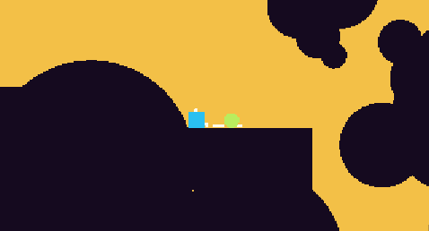
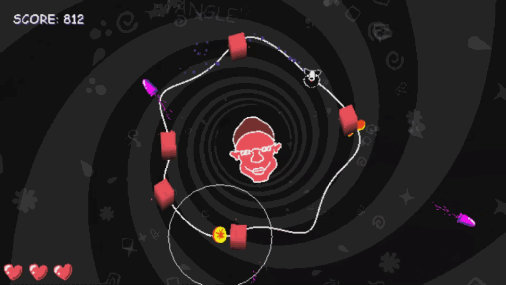
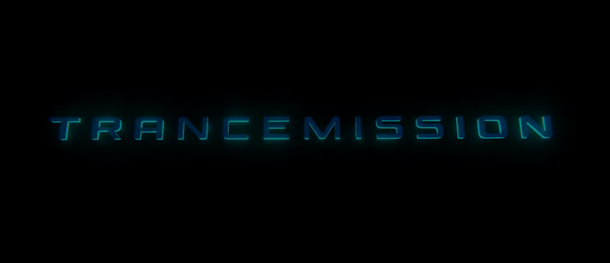

Apr 2024 - Present
Empires & Puzzles is a completely new take on match-3 puzzle games, combining RPG elements, PvE quests, and base-building — topped off with epic PvP duels that range from riveting 1v1 Raids to rambunctious 100v100 Wars.
I'm part of the development team for Empires And Puzzles project. As of now my main focus has been working on new heroes and fixing found bugs with different interactions.
Jul 2023 - Apr 2024
Boom Slingers is an explosive turn-based action game! Battle with other Slingers. Collect weapons, characters and emotes.
Boom Slingers was launched globally in December 2020 and has gained over 2 million players since its launch!
It has an active, +8000 person Discord channel and stellar reviews on App Stores.
I joined Boomslingers when it was in live-ops and I've made UI reworks all around the project and also supported further development for new features both in front-end and back-end.
I had the chance to create new content for the game as well such as a new tutorial flow for new players and timed chest system that players use to gain new weapons and get new content.
I worked as a generalist programmer on all parts of the game.
I started on client-side tasks like handling assetloading tasks and implementing features.
As the project moved forward I moved to implement front- and back-end features such as data importing from front-end and account security on backend.
I had a chance to be part of setting up a content delivery network system for the game as well as a continuous integration pipeline to automate project builds.
I created the shader used for visualizing meshes using points.
Included point size and color randomization per mesh.
I really loved to work on this project and hone my shader skills.

I wanted to learn new tools during this project like Unitys new input system and collab.
I created all the code in this project and the basic gameplay loop.

For JANTOR I created the loop system where player moves, and the live-like movement the loop has.
I also implemented JANTORS attacks, phases and the basic gameplay loop.

I created spell customization menu and spell modifiers for runtime using Unitys scriptable objects.
This was a game project we worked on during our school in Kajaani University of Applied Sciences, and I personally learned a lot about overall game development process.

I worked on gameplay elements like handling user inputs, adding object pooling into map piece generation and creating score system.
The project was made using both C++ and blueprints.
This was my first project made with Unreal Engine and using C++.

I created controller handling and inputs, player movement, created a audio controller and handled UI menus.
I also implemented Steamworks (Steam SDK) to the project and learned a lot about publishing games on different platforms.

I created a tool to get input from audiofiles to use on the background elements to amplify the rythm of songs.